산업안전기사 (2020-06-06 기출문제)
1과목: 안전관리론
1. 산업안전보건법령상 안전보건표지의 종류 중 경고표지에 해당하지 않는 것은?
- 레이저광선 경고
- 급성독성물질 경고
- 매달린 물체 경고
- 차량통행 경고
(정답률: 77%)

2. 몇 사람의 전문가에 의하여 과제에 관한 견해를 발표한 뒤에 참가자로 하여금 의견이나 질문을 하게 하여 토의하는 방법을 무엇이라 하는가?
- 심포지움(symposium)
- 버즈 세션(buzz session)
- 케이스 메소드(case method)
- 패널 디스커션(panel discussion)
(정답률: 87%)
3. 작업을 하고 있을 때 긴급 이상상태 또는 돌발 사태가 되면 순간적으로 긴장하게 되어 판단능력의 둔화 또는 정지상태가 되는 것은?
- 의식의 우회
- 의식의 과잉
- 의식의 단절
- 의식의 수준저하
(정답률: 67%)
4. A사업장의 2019년 도수율이 10이라 할 때 연천인율은 얼마인가?
- 2.4
- 5
- 12
- 24
(정답률: 72%)
5. 산업안전보건법령상 산업안전보건위원회의 사용자위원에 해당되지 않는 사람은? (단, 각 사업장은 해당하는 사람을 선임하여야 하는 대상 사업장으로 한다.)
- 안전관리자
- 산업보건의
- 명예산업안전감독관
- 해당 사업장 부서의 장
(정답률: 85%)
6. 산업안전보건법상 안전관리자의 업무는?
- 직업성질환 발생의 원인조사 및 대책수립
- 해당 사업장 안전교육계획의 수립 및 안전교육 실시에 관한 보좌 조언ㆍ지도
- 근로자의 건강장해의 원인조사와 재발방지를 위한 의학적 조치
- 당해 작업에서 발생한 산업재해에 관한 보고 및 이에 대한 응급조치
(정답률: 77%)
7. 어느 사업장에서 물적손실이 수반된 무상해 사고가 180건 발생하였다면 중상은 몇 건이나 발생할 수 있는가? (단, 버드의 재해구성 비율법칙에 따른다.)
- 6건
- 18건
- 20건
- 29건
(정답률: 75%)
8. 안전보건교육 계획에 포함해야 할 사항이 아닌 것은?
- 교육지도안
- 교육장소 및 교육방법
- 교육의 종류 및 대상
- 교육의 과목 및 교육내용
(정답률: 75%)
9. YㆍG 성격검사에서 “안전, 적응, 적극형”에 해당하는 형의 종류는?
- A형
- B형
- C형
- D형
(정답률: 47%)
10. 안전교육에 대한 설명으로 옳은 것은?
- 사례중심과 실연을 통하여 기능적 이해를 돕는다.
- 사무직과 기능직은 그 업무가 판이하게 다르므로 분리하여 교육한다.
- 현장 작업자는 이해력이 낮으므로 단순반복 및 암기를 시킨다.
- 안전교육에 건성으로 참여하는 것을 방지하기 위하여 인사고과에 필히 반영한다.
(정답률: 83%)
11. 산업안전보건법령에 따라 환기가 극히 불량한 좁은 밀폐된 장소에서 용접작업을 하는 근로자를 대상으로 한 특별안전ㆍ보건교육 내용에 포함되지 않는 것은? (단, 일반적인 안전ㆍ보건에 필요한 사항은 제외한다.)
- 환기설비에 관한 사항
- 질식 시 응급조치에 관한 사항
- 작업순서, 안전작업방법 및 수칙에 관한 사항
- 폭발 한계점, 발화점 및 인화점 등에 관한 사항
(정답률: 78%)
12. 크레인, 리프트 및 곤돌라는 사업장에 설치가 끝난 날부터 몇 년 이내에 최초의 안전검사를 실시해야 하는가? (단, 이동식 크레인, 이삿짐운반용 리프트는 제외한다.)
- 1년
- 2년
- 3년
- 4년
(정답률: 63%)
13. 재해 코스트 산정에 있어 시몬즈(R.H. Simonds)방식에 의한 재해코스트 산정법으로 옳은 것은?
- 직접비+간접비
- 간접비+비보험코스트
- 보험코스트+비보험코스트
- 보험코스트+사업부보상금 지급액
(정답률: 81%)
14. 다음 중 맥그리거(McGregor)의 Y이론과 가장 거리가 먼 것은?
- 성선설
- 상호신뢰
- 선진국형
- 권위주의적 리더십
(정답률: 83%)
15. 생체 리듬(Bio Rhythm)중 일반적으로 28일을 주기로 반복되며, 주의력ㆍ창조력ㆍ예감 및 통찰력 등을 좌우하는 리듬은?
- 육체적 리듬
- 지성적 리듬
- 감성적 리듬
- 정신적 리듬
(정답률: 63%)
16. 재해예방의 4원칙에 해당하지 않는 것은?
- 예방가능의 원칙
- 손실가능의 원칙
- 원인연계의 원칙
- 대책선정의 원칙
(정답률: 69%)
17. 관리감독자를 대상으로 교육하는 TWI의 교육내용이 아닌 것은?
- 문제해결훈련
- 작업지도훈련
- 인간관계훈련
- 작업방법훈련
(정답률: 57%)
18. 위험예지훈련 4R(라운드) 기법의 진행방법에서 3R에 해당하는 것은?
- 목표설정
- 대책수립
- 본질추구
- 현상파악
(정답률: 71%)
19. 무재해운동의 기본이념 3원칙 중 다음에서 설명하는 것은?
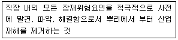
- 무의 원칙
- 선취의 원칙
- 참가의 원칙
- 확인의 원칙
(정답률: 68%)
20. 방진마스크의 사용 조건 중 산소농도의 최소기준으로 옳은 것은?
- 16%
- 18%
- 21%
- 23.5%
(정답률: 81%)
2과목: 인간공학 및 시스템안전공학
21. 인체 계측 자료의 응용 원칙이 아닌 것은?
- 기존 동일 제품을 기준으로 한 설계
- 최대치수와 최소치수를 기준으로 한 설계
- 조절범위를 기준으로 한 설계
- 평균치를 기준으로 한 설계
(정답률: 79%)
22. 인체에서 뼈의 주요 기능이 아닌 것은?
- 인체의 지주
- 장기의 보호
- 골수의 조혈
- 근육의 대사
(정답률: 79%)
23. 각 부품의 신뢰도가 다음과 같을 때 시스템의 전체 신뢰도는 약 얼마인가?
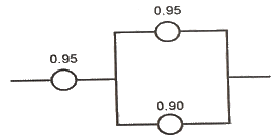
- 0.8123
- 0.9453
- 0.9553
- 0.9953
(정답률: 75%)
24. 손이나 특정 신체부위에 발생하는 누적손상장애(CTD)의 발생인자와 가장 거리가 먼 것은?
- 무리한 힘
- 다습한 환경
- 장시간의 진동
- 반복도가 높은 작업
(정답률: 86%)
25. 인간공학 연구조사에 사용되는 기준의 구비조건과 가장 거리가 먼 것은?
- 다양성
- 적절성
- 무오염성
- 기준 척도의 신뢰성
(정답률: 66%)
26. 의자 설계 시 고려해야할 일반적인 원리와 가장 거리가 먼 것은?
- 자세고정을 줄인다.
- 조정이 용이해야 한다.
- 디스크가 받는 압력을 줄인다.
- 요추 부위의 후만곡선을 유지한다.
(정답률: 82%)
27. 다음 FT도에서 시스템에 고장이 발생할 확률은 약 얼마인가? (단, X1과 X2의 발생확률은 각각 0.⑤, 0.03이다.)
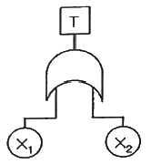
- 0.0015
- 0.0785
- 0.9215
- 0.9985
(정답률: 62%)
28. 반사율이 85%, 글자의 밝기가 400cd/m2인 VDT화면에 350lux의 조명이 있다면 대비는 약 얼마인가?
- -6.0
- -5.0
- -4.2
- -2.8
(정답률: 51%)
29. 화학설비에 대한 안전성 평가 중 정량적 평가항목에 해당되지 않는 것은?
- 공정
- 취급물질
- 압력
- 화학설비용량
(정답률: 74%)
30. 시각 장치와 비교하여 청각 장치 사용이 유리한 경우는?
- 메시지가 길 때
- 메시지가 복잡할 때
- 정보 전달 장소가 너무 소란할 때
- 메시지에 대한 즉각적인 반응이 필요할 떄
(정답률: 87%)
31. 산업안전보건법령상 사업주가 유해위험방지 계획서를 제출할 때에는 사업장 별로 관련 서류를 첨부하여 해당 작업 시작 며칠 전까지 해당 기관에 제출하여야 하는가?
- 7일
- 15일
- 30일
- 60일
(정답률: 70%)
32. 인간-기계 시스템을 설계할 때에는 특정기능을 기계에 할당하거나 인간에게 할당하게 된다. 이러한 기능할당과 관련된 사항으로 옳지 않은 것은? (단, 인공지능과 관련된 사항은 제외한다.)
- 인간은 원칙을 적용하여 다양한 문제를 해결하는 능력이 기계에 비해 우월하다.
- 일반적으로 기계는 장시간 일관성이 있는 작업을 수행하는 능력이 인간에 비해 우월하다.
- 인간은 소음, 이상온도 등의 환경에서 작업을 수행하는 능력이 기계에 비해 우월하다.
- 일반적으로 인간은 주위가 이상하거나 예기치 못한 사건을 감지하여 대처하는 능력이 기계에 비해 우월하다.
(정답률: 83%)
33. 모든 시스템 안전분석에서 제일 첫번째 단계의 분석으로, 실행되고 있는 시스템을 포함한 모든 것의 상태를 인식하고 시스템의 개발단계에서 시스템 고유의 위험상태를 식별하여 예상되고 있는 재해의 위험수준을 결정하는 것을 목적으로 하는 위험분석 기법은?
- 결함위험분석(FHA: Fault Hazard Analysis)
- 시스템위험분석(SHA: System Hazard Analysis)
- 예비위험분석(PHA: Preliminary Hazard Analysis)
- 운용위험분석(OHA: Operating Hazard Analysis)
(정답률: 77%)
34. 컷셋(cut set)과 패스셋(pass set)에 관한 설명으로 옳은 것은?
- 동일한 시스템에서 패스셋의 개수와 컷셋의 개수는 같다.
- 패스셋은 동시에 발생했을 때 정상사상을 유발하는 사상들의 집합이다.
- 일반적으로 시스템에서 최소 컷셋의 개수가 늘어나면 위험 수준이 높아진다.
- 최소 컷셋은 어떤 고장이나 실수를 일으키지 않으면 재해는 일어나지 않는다고 하는 것이다.
(정답률: 62%)
35. 조종장치를 촉각적으로 식별하기 위하여 사용되는 촉각적 코드화의 방법으로 옳지 않은 것은?
- 색감을 활용한 코드화
- 크기를 이용한 코드화
- 조종장치의 형상 코드화
- 표면 촉감을 이용한 코드화
(정답률: 80%)
36. FT도에서 사용하는 기호 중 다음 그림과 같이 OR 게이트이지만 2개 또는 그 이상의 입력이 동시에 존재할 때 출력이 생기지 않는 경우 사용하는 것은?(문제 오류로 처음 가답안 발표시 2번으로 정답이 발표되었지만 확정답안 발표시 전항 정답 처리 되었습니다. 여기서는 가답안인 2번을 누르면 정답 처리 됩니다.)
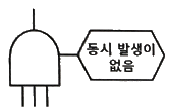
- 부정 OR 게이트
- 배타적 OR 게이트
- 억제 게이트
- 조합 OR 게이트
(정답률: 78%)
37. 휴먼 에러(Human Error)의 요인을 심리적 요인과 물리적 요인으로 구분할 때, 심리적 요인에 해당하는 것은?
- 일이 너무 복잡한 경우
- 일의 생산성이 너무 강조될 경우
- 동일 형상의 것이 나란히 있을 경우
- 서두르거나 절박한 상황에 놓여있을 경우
(정답률: 84%)
38. 적절한 온도의 작업환경에서 추운 환경으로 온도가 변할 때 우리의 신체가 수행하는 조절작용이 아닌 것은?
- 발한(發汗)이 시작된다.
- 피부의 온도가 내려간다.
- 직장(直腸)온도가 약간 올라간다.
- 혈액의 많은 양이 몸의 중심부를 위주로 순환한다.
(정답률: 72%)
39. 시스템안전 MIL-STD-882B 분류기준의 위험성 평가 매트릭스에서 발생빈도에 속하지 않는 것은?
- 거의 발생하지 않는(remote)
- 전혀 발생하지 않는(impossible)
- 보통 발생하는(reasonably probable)
- 극히 발생하지 않을 것 같은(extremely improbable)
(정답률: 54%)
40. FTA에 의한 재해사례 연구순서 중 2단계에 해당하는 것은?
- FT 도의 작성
- 톱 사상의 선정
- 개선계획의 작성
- 사상의 재해원인을 규명
(정답률: 51%)
3과목: 기계위험방지기술
41. 산업안전보건법령상 로봇에 설치되는 제어장치의 조건에 적합하지 않은 것은?
- 누름버튼은 오작동 방지를 위한 가드를 설치하는 등 불시기동을 방지할 수 있는 구조로 제작ㆍ설치되어야 한다.
- 로봇에는 외부 보호 장치와 연결하기 위해 하나 이상의 보호정지회로를 구비해야 한다.
- 전원공급램프, 자동운전, 결함검출 등 작동제어의 상태를 확인할 수 있는 표시장치를 설치해야 한다.
- 조작버튼 및 선택스위치 등 제어장치에는 해당 기능을 명확하게 구분할 수 있도록 표시해야 한다.
(정답률: 75%)
42. 컨베이어의 제작 및 안전기준 상 작업구역 및 통행구역에 덮개, 울 등을 설치해야 하는 부위에 해당하지 않는 것은?
- 컨베이어의 동력전달 부분
- 컨베이어의 제동장치 부분
- 호퍼, 슈트의 개구부 및 장력 유지장치
- 컨베이어 벨트, 풀리, 롤러, 체인, 스프라켓, 스크류 등
(정답률: 56%)
43. 산업안전보건법령상 탁상용 연삭기의 덮개에는 작업 받침대와 연삭숫돌과의 간격을 몇 mm 이하로 조정할 수 있어야 하는가?
- 3
- 4
- 5
- 10
(정답률: 51%)
44. 다음 중 회전축, 커플링 등 회전하는 물체에 작업복 등이 말려드는 위험을 초래하는 위험점은?
- 협착점
- 접선물림점
- 절단점
- 회전말림점
(정답률: 81%)
45. 가공기계에 쓰이는 주된 풀 푸르프(Fool Proof)에서 가드(Guard)의 형식으로 틀린 것은?
- 인터록 가드(Interlock Guard)
- 안내 가드(Guide Guard)
- 조정 가드(Adjustable Guard)
- 고정 가드(Fixed Guard)
(정답률: 57%)
46. 밀링작업 시 안전수칙으로 틀린 것은?
- 보안경을 착용한다.
- 칩은 기계를 정지시킨 다음에 브러시로 제거한다.
- 가공 중에는 손으로 가공면을 점검하지 않는다.
- 면장갑을 착용하여 작업한다.
(정답률: 86%)
47. 크레인의 방호장치에 해당되지 않은 것은?
- 권과방지장치
- 과부하방지장치
- 비상정지장치
- 자동보수장치
(정답률: 82%)
48. 무부하 상태에서 지게차로 20km/h의 속도로 주행할 때, 좌우 안정도는 몇 % 이내이어야 하는가?
- 37%
- 39%
- 41%
- 43%
(정답률: 58%)
49. 선반가공 시 연속적으로 발생되는 칩으로 인해 작업자가 다치는 것을 방지하기 위하여 칩을 짧게 절단 시켜주는 안전장치는?
- 커버
- 브레이크
- 보안경
- 칩 브레이커
(정답률: 87%)
50. 아세틸렌 용접장치에 관한 설명 중 틀린 것은?
- 아세틸렌발생기로부터 5m 이내, 발생기실로부터 3m 이내에는 흡연 및 화기사용을 금지한다.
- 발생기실에는 관계 근로자가 아닌 사람이 출입하는 것을 금지한다.
- 아세틸렌 용기는 뉘어서 사용한다.
- 건식안전기의 형식으로 소결금속식과 우회로식이 있다.
(정답률: 82%)
51. 산업안전보건법령상 프레스의 작업시작 전 점검사항이 아닌 것은?
- 금형 및 고정볼트 상태
- 방호장치의 기능
- 전단기의 칼날 및 테이블의 상태
- 트롤리(trolley)가 횡행하는 레일의 상태
(정답률: 74%)
52. 프레스 양수조작식 방호장치 누름버튼의 상호간 내측거리는 몇 mm 이상인가?
- 50
- 100
- 200
- 300
(정답률: 59%)
53. 산업안전보건법령상 승강기의 종류에 해당하지 않는 것은?
- 리프트
- 에스컬레이터
- 화물용 엘리베이터
- 승객용 엘리베이터
(정답률: 75%)
54. 롤러기의 앞면 롤의 지름이 300mm, 분당회전수가 30회일 경우 허용되는 급정지장치의 금정지거리는 약 몇 mm 이내이어야 하는가?
- 37.7
- 31.4
- 377
- 314
(정답률: 49%)
55. 어떤 로프의 최대하중이 700N이고, 정격하중은 100N이다. 이 때 안전계수는 얼마인가?
- 5
- 6
- 7
- 8
(정답률: 83%)
56. 다음 중 설비의 진단방법에 있어 비파괴 시험이나 검사에 해당하지 않는 것은?
- 피로시험
- 음향탐상검사
- 방사선투과시험
- 초음파탐상검사
(정답률: 84%)
57. 지름 5cm 이상을 갖는 회전중인 연삭숫돌이 근로자들에게 위험을 미칠 우려가 있는 경우에 필요한 방호장치는?
- 받침대
- 과부하 방지장치
- 덮개
- 프레임
(정답률: 84%)
58. 프레스 금형의 파손에 의한 위험방지 방법이 아닌 것은?
- 금형에 사용하는 스프링은 반드시 인장형으로 할 것
- 작업 중 진동 및 충격에 의해 볼트 및 너트의 헐거워짐이 없도록 할 것
- 금형의 하중 중심은 원칙적으로 프레스 기계의 하중 중심과 일치하도록 할 것
- 캠, 기타 충격이 반복해서 가해지는 부분에는 완충장치를 설치할 것
(정답률: 72%)
59. 기계설비의 작업능률과 안전을 위해 공장의 설비 배치 3단계를 올바른 순서대로 나열한 것은?
- 지역배치→건물배치→기계배치
- 건물배치→지역배치→기계배치
- 기계배치→건물배치→지역배치
- 지역배치→기계배치→건물배치
(정답률: 79%)
60. 다음 중 연삭 숫돌의 파괴원인으로 거리가 먼 것은?
- 플랜지가 현저히 클 때
- 숫돌에 균열이 있을 때
- 숫돌의 측면을 사용할 때
- 숫돌의 치수 특히 내경의 크기가 적당하지 않을 때
(정답률: 65%)
4과목: 전기위험방지기술
61. 충격전압시험시의 표준충격파형을 1.2×50μs로 나타내는 경우 1.2와 50이 뜻하는 것은?
- 파두장 - 파미장
- 최초섬락시간 - 최종섬락시간
- 라이징타임 - 스테이블타임
- 라이징타임 - 충격전압인가시간
(정답률: 70%)
62. 폭발위험장소의 분류 중 인화성 액체의 증기 또는 가연성 가스에 의한 폭발위험이 지속적으로 또는 장기간 존재하는 장소는 몇 종 장소로 분류되는가?
- 0종 장소
- 1종 장소
- 2종 장소
- 3종 장소
(정답률: 73%)
63. 활선 작업 시 사용할 수 없는 전기작업용 안전장구는?
- 전기안전모
- 절연장갑
- 검전기
- 승주용 가제
(정답률: 76%)
64. 인체의 전기저항을 500Ω이라 한다면 심실세동을 일으키는 위험에너지(J)는? (단, 심실세동전류
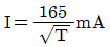
, 통전시간은 1초이다.)- 13.61
- 23.21
- 33.42
- 44.63
(정답률: 78%)
65. 피뢰침의 제한전압이 800kV, 충격절연강도가 1000kV라 할 때, 보호여유도는 몇 % 인가?
- 25
- 33
- 47
- 63
(정답률: 69%)
66. 감전사고를 일으키는 주된 형태가 아닌 것은?
- 충전전로에 인체가 접촉되는 경우
- 이중절연 구조로 된 전기 기계ㆍ기구를 사용하는 경우
- 고전압의 전선로에 인체가 근접하여 섬락이 발생된 경우
- 충전 전기회로에 인체가 단락회로의 일부를 형성하는 경우
(정답률: 84%)
67. 화재가 발생하였을 때 조사해야 하는 내용으로 가장 관계가 먼 것은?
- 발화원
- 착화물
- 출화의 경과
- 응고물
(정답률: 73%)
68. 정전기에 관한 설명으로 옳은 것은?
- 정전기는 발생에서부터 억제-축적방지-안전한 방전이 재해를 방지할 수 있다.
- 정전기발생은 고체의 분쇄공정에서 가장 많이 발생한다.
- 액체의 이송시는 그 속도(유속)를 7(m/s)이상 빠르게 하여 정전기의 발생을 억제한다.
- 접지 값은 10(Ω)이하로 하되 플라스틱 같은 절연도가 높은 부도체를 사용한다.
(정답률: 54%)
69. 전기설비의 필요한 부분에 반드시 보호접지를 실시하여야 한다. 접지공사의 종류에 따른 접지저항과 접지선의 굵기가 틀린 것은?(관련 규정 개정전 문제로 여기서는 기존 정답인 2번을 누르면 정답 처리됩니다. 자세한 내용은 해설을 참고하세요.)
- 제1종 : 10Ω이하, 공칭단면적 6mm2 이상의 연동선
- 제2종 :
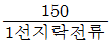
Ω이하, 공칭단면적 2.5mm2 이상의 연동선 - 제3종 : 100Ω이하, 공칭단면적 2.5mm2 이상의 연동선
- 특별 제3종 : 10Ω이하, 공칭단면적 2.5mm2 이상의 연동선
(정답률: 70%)
70. 교류아크 용접기에 전격 방지기를 설치하는 요령 중 틀린 것은?
- 이완 방지 조치를 한다.
- 직각으로만 부착해야 한다.
- 동작 상태를 알기 쉬운 곳에 설치한다.
- 테스트 스위치는 조작이 용이한 곳에 위치시킨다.
(정답률: 77%)
71. 전기기기의 Y종 절연물의 최고 허용온도는?
- 80℃
- 85℃
- 90℃
- 1⑤℃
(정답률: 55%)
72. 내압방폭구조의 기본적 성능에 관한 사항으로 틀린 것은?
- 내부에서 폭발할 경우 그 압력에 견딜 것
- 폭발화염이 외부로 유출되지 않을 것
- 습기침투에 대한 보호가 될 것
- 외함 표면온도가 주위의 가연성 가스에 점화하지 않을 것
(정답률: 77%)
73. 온도조절용 바이메탈과 온도 퓨즈가 회로에 조합되어 있는 다리미를 사용한 가정에서 화재가 발생했다. 다리미에 부착되어 있던 바이메탈과 온도퓨즈를 대상으로 화재사고를 분석하려 하는데 논리기호를 사용하여 표현하고자 한다. 어느 기호가 적당한가? (단, 바이메탈의 작동과 온도 퓨즈가 끊어졌을 경우를 0, 그렇지 않을 경우를 1이라 한다.)
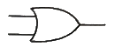
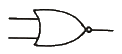
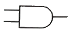
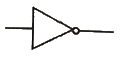
(정답률: 56%)
74. 화염일주한계에 대한 설명으로 옳은 것은?
- 폭발성 가스와 공기의 혼합기에 온도를 높인 경우 화염이 발생 할 때까지의 시간 한계치
- 폭발성 분위기에 있는 용기의 접합면 틈새를 통해 화염이 내부에서 외부로 전파되는 것을 저지할 수 있는 틈새의 최대간격치
- 폭발성 분위기 속에서 전기불꽃에 의하여 폭발을 일으킬 수 있는 화염을 발생시키기에 충분한 교류파형의 1주기치
- 방폭설비에서 이상이 발생하여 불꽃이 생성된 경우에 그것이 점화원으로 작용하지 않도록 화염의 에너지를 억제하여 폭발하한계로 되도록 화염 크기를 조정하는 한계치
(정답률: 70%)
75. 폭발위험이 있는 장소의 설정 및 관리와 가장 관계가 먼 것은?
- 인화성 액체의 증기 사용
- 가연성 가스의 제조
- 가연성 분진 제조
- 종이 등 가연성 물질 취급
(정답률: 74%)
76. 인체의 표면적이 0.5m2이고 정전용량은 0.02pF/cm2이다. 3300V의 전압이 인가되어 있는 전선에 접근하여 작업을 할 때 인체에 축적되는 정전기 에너지(J)는?
- 5.445×10-2
- 5.445×10-4
- 2.723×10-2
- 2.723×10-4
(정답률: 54%)
77. 제 3종 접지공사를 시설하여야 하는 장소가 아닌 것은?(관련 규정 개정전 문제로 여기서는 기존 정답인 3번을 누르면 정답 처리됩니다. 자세한 내용은 해설을 참고하세요.)
- 금속몰드 배선에 사용하는 몰드
- 고압계기용 변압기의 2차측 전로
- 고압용 금속제 케이블트레이 계통의 금속트레이
- 400V 미만의 저압용 기계기구의 철대 및 금속제 외함
(정답률: 71%)
78. 전자파 중에서 광량자 에너지가 가장 큰 것은?
- 극저주파
- 마이크로파
- 가시광선
- 적외선
(정답률: 61%)
79. 다음 중 폭발위험장소에 전기설비를 설치할 떄 전기적인 방호조치로 적절하지 않은 것은?
- 다상 전기기기는 결상운전으로 인한 과열방지 조치를 한다.
- 배선은 단락ㆍ지락 사고시의 영향과 과부하로부터 보호한다.
- 자동차단이 점화의 위험보다 클 때는 경보장치를 사용한다.
- 단락보호장치는 고장상태에서 자동복구 되도록 한다.
(정답률: 72%)
80. 감전사고 방지대책으로 틀린 것은?
- 설비의 필요한 부분에 보호접지 실시
- 노출된 충전부에 통전망 설치
- 안전전압 이하의 전기기기 사용
- 전기기기 및 설비의 정비
(정답률: 71%)
5과목: 화학설비위험방지기술
81. 다음 관(pipe) 부속품 중 관로의 방향을 변경하기 위하여 사용하는 부속품은?
- 니플(nipple)
- 유니온(union)
- 플랜지(flange)
- 엘보우(elbow)
(정답률: 80%)
82. 산업안전보건기준에 관한 규칙상 국소배기장치의 후드 설치 기준이 아닌 것은?
- 유해물질이 발생하는 곳마다 설치할 것
- 후드의 개구부 면적은 가능한 한 크게 할 것
- 외부식 또는 리시버식 후드는 해당 분진등의 발산원에 가장 가까운 위치에 설치할 것
- 후드 형식은 가능하면 포위식 또는 부스식 후드를 설치할 것
(정답률: 69%)
83. 산업안전보건기준에 관한 규칙에 따르면 쥐에 대한 경구투입실험에 의하여 실험동물의 50퍼센트를 사망시킬 수 있는 물질의 양, 즉 LD50(경구, 쥐)이 킬로그램당 몇 밀리그램-(체중) 이하인 화학물질이 급성 독성 물질에 해당하는가?
- 25
- 100
- 300
- 500
(정답률: 62%)
84. 반응성 화학물질의 위험성은 실험에 의한 평가 대신 문헌조사 등을 통해 계산에 의해 평가하는 방법을 사용할 수 있다. 이에 관한 설명으로 옳지 않은 것은?
- 위험성이 너무 커서 물성을 측정할 수 없는 경우 계산에 의한 평가 방법을 사용할 수 도 있다.
- 연소열, 분해열, 폭발열 등의 크기에 의해 그 물질의 폭발 또는 발화의 위험예측이 가능하다.
- 계산에 의한 평가를 하기 위해서는 폭발 또는 분해에 따른 생성물의 예측이 이루어져야 한다.
- 계산에 의한 위험성 예측은 모든 물질에 대해 정확성이 있으므로 더 이상의 실험을 필요로 하지 않는다.
(정답률: 82%)
85. 압축기와 송풍의 관로에 심한 공기의 맥동과 진동을 발생하면서 불안정한 운전이 되는 서징(surging) 현상의 방지법으로 옳지 않은 것은?
- 풍량을 감소시킨다.
- 배관의 경사를 완만하게 한다.
- 교축밸브를 기계에서 멀리 설치한다.
- 토출가스를 흡입측에 바이패스 시키거나 방출밸브에 의해 대기로 방출시킨다.
(정답률: 76%)
86. 다음 중 독성이 가장 강한 가스는?
- NH3
- COCI2
- C6H5CH3
- H2S
(정답률: 75%)
87. 다음 중 분해 폭발의 위험성이 있는 아세틸렌의 용제로 가장 적절한 것은?
- 에테르
- 에틸알코올
- 아세톤
- 아세트알데히드
(정답률: 75%)
88. 분진폭발의 발생 순서로 옳은 것은?
- 비산→분산→퇴적분진→발화원→2차폭발→전면폭발
- 비산→퇴적분진→분산→발화원→2차폭발→전면폭발
- 퇴적분진→발화원→분산→비산→전면폭발→2차폭발
- 퇴적분진→비산→분산→발화원→전면폭발→2차폭발
(정답률: 74%)
89. 폭발방호대책 중 이상 또는 과잉압력에 대한 안전장치로 볼 수 없는 것은?
- 안전 밸브(safety valve)
- 릴리프 밸브(relief valve)
- 파열판(bursting disk)
- 플레임 어레스터(flame arrester)
(정답률: 68%)
90. 다음 인화성 가스 중 가장 가벼운 물질은?
- 아세틸렌
- 수소
- 부탄
- 에틸렌
(정답률: 72%)
91. 가연성 가스 및 증기의 위험도에 따른 방폭전기기기의 분류로 폭발등급을 사용하는데, 이러한 폭발등급을 결정하는 것은?
- 발화도
- 화염일주한계
- 폭발한계
- 최소발화에너지
(정답률: 63%)
92. 다음 중 메타인산(HPO3)에 의한 소화효과를 가진 분말소화약제의 종류는?
- 제1종 분말소화약제
- 제2종 분말소화약제
- 제3종 분말소화약제
- 제4종 분말소화약제
(정답률: 62%)
93. 다음 중 파열판에 관한 설명으로 틀린 것은?
- 압력 방출속도가 빠르다.
- 한번 파열되면 재사용 할 수 없다.
- 한번 부착한 후에는 교환할 필요가 없다.
- 높은 점성의 슬러리나 부식성 유체에 적용할 수 있다.
(정답률: 75%)
94. 공기 중에서 폭발범위가 12.5~74vol% 인 일산화탄소의 위험도는 얼마인가?
- 4.92
- 5.26
- 6.26
- 7.⑤
(정답률: 69%)
95. 산업안전보건법령에 따라 유해하거나 위험한 설비의 설치ㆍ이전 또는 주요 구조부분의 변경공사 시 공정안전보고서의 제출시기는 착공일 며칠 전까지 관련기관에 제출하여야 하는가?
- 15일
- 30일
- 60일
- 90일
(정답률: 50%)
96. 소화약제 IG-100의 구성성분은?
- 질소
- 산소
- 이산화탄소
- 수소
(정답률: 57%)
97. 프로판(C3H8)의 연소에 필요한 최소 산소농도의 값은 약 얼마인가? (단, 프로판의 폭발하한은 Jone식에 의해 추산한다.)
- 8.1%v/v
- 11.1%v/v
- 15.1%v/v
- 20.1%v/v
(정답률: 52%)
98. 다음 중 물과 반응하여 아세틸렌을 발생시키는 물질은?
- Zn
- Mg
- Al
- CaC2
(정답률: 67%)
99. 메탄 1vol%, 헥산 2vol%, 에틸렌 2vol%, 공기 95vol%로 된 혼합가스의 폭발하한계값(vol%)은 약 얼마인가? (단, 메탄, 헥산, 에틸렌의 폭발하한계 값은 각각 5.0, 1.1, 2.7vol% 이다.)
- 1.8
- 3.5
- 12.8
- 21.7
(정답률: 55%)
100. 가열ㆍ마찰ㆍ충격 또는 다른 화학물질과의 접촉 등으로 인하여 산소나 산화제의 공급이 없더라도 폭발 등 격렬한 반응을 일으킬 수 있는 물질은?
- 에틸알코올
- 인화성 고체
- 니트로화합물
- 테레핀유
(정답률: 75%)
6과목: 건설안전기술
101. 사업주가 유해위험방지 계획서 제출 후 건설공사 중 6개월 이내마다 안전보건공단의 확인을 받아야 할 내용이 아닌 것은?
- 유해위험방지 계획서의 내용과 실제공사 내용이 부함하는지 여부
- 유해위험방지 계획서 변경 내용의 적정성
- 자율안전관리 업체 유해ㆍ위험방지 계획서 제출ㆍ심사 면제
- 추가적인 유해ㆍ위험요인의 존재여부
(정답률: 70%)
102. 철골공사 시 안전작업방법 및 준수사항으로 옳지 않은 것은?
- 강풍, 폭우 등과 같은 악천우시에는 작업을 중지하여야 하며 특히 강풍시에는 높은 곳에 있는 부재나 공구류가 낙하비래하지 않도록 조치하여야 한다.
- 철골부재 반입 시 시공순서가 빠른 부재는 상단부에 위치하도록 한다.
- 구명줄 설치 시 마닐라 로프 직경 10mm를 기준하여 설치하고 작업방법을 충분히 검토하여야 한다.
- 철골보의 두곳을 매어 인양시킬 때 와이어로프의 내각은 60°이하이어야 한다.
(정답률: 52%)
103. 지면보다 낮은 땅을 파는데 적합하고 수중굴착도 가능한 굴착기계는?
- 백호우
- 파워쇼벨
- 가이데릭
- 파일드라이버
(정답률: 78%)
104. 산업안전보건법령에 따른 지반의 종류별 굴착면의 기울기 기준으로 옳지 않은 것은?(2021년 11월 19일부터 개정된 규정 적용됨)
- 보통흙 습지 - 1 : 1 ~ 1 : 1.5
- 보통흙 건지 - 1 : 0.3 ~ 1 : 1
- 풍화암 - 1 : 1.0
- 연암 - 1 : 1.0
(정답률: 72%)
1⑤. 콘크리트 타설 시 거푸집 측압에 관한 설명으로 옳지 않은 것은?
- 기온이 높을수록 측압은 크다.
- 타설속도가 클수록 측압은 크다.
- 슬럼프가 클수록 측압은 크다.
- 다짐이 과할수록 측압은 크다.
(정답률: 66%)
106. 강관비계의 수직방향 벽이음 조립간격(m)으로 옳은 것은? (단, 틀비계이며 높이가 5m 이상일 경우)
- 2m
- 4m
- 6m
- 9m
(정답률: 63%)
107. 굴착과 싣기를 동시에 할 수 있는 토공기계가 아닌 것은?
- Power shovel
- Tractor shovel
- Back hoe
- Motor grader
(정답률: 77%)
108. 구축물에 안전진단 등 안전성 평가를 실시하여 근로자에게 미칠 위험성을 미리 제거하여야 하는 경우가 아닌 것은?
- 구축물 또는 이와 유사한 시설물의 인근에서 굴착ㆍ항타작업 등으로 침하ㆍ균열 등이 발생하여 붕괴의 위험이 예상될 경우
- 구조물, 건축물, 그 밖의 시설물이 그 자체의 무게ㆍ적설ㆍ풍압 또는 그 밖에 부가되는 하중 등으로 붕괴 등의 위험이 있을 경우
- 화재 등으로 구축물 또는 이와 유사한 시설물의 내력(耐力)이 심하게 저하되었을 경우
- 구축물의 구조체가 안전측으로 과도하게 설계가 되었을 경우
(정답률: 81%)
109. 다음 중 방망사의 폐기 시 인장강도에 해당하는 것은? (단, 그물코의 크기는 10cm이며 매듭없는 방망의 경우임)
- 50kg
- 100kg
- 150kg
- 200kg
(정답률: 54%)
110. 작업장에 계단 및 계단참을 설치하는 경우 매제곱미터 당 최소 몇 킬로그램 이상의 하중에 견딜 수 있는 강도를 가진 구조로 설치하여야 하는가?
- 300kg
- 400kg
- 500kg
- 600kg
(정답률: 50%)
111. 굴착공사에서 비탈면 또는 비탈면 하단을 성토하여 붕괴를 방지하는 공법은?
- 배수공
- 배토공
- 공작물에 의한 방지공
- 압성토공
(정답률: 61%)
112. 공정율이 65%인 건설현장의 경우 공사 진척에 따른 산업안전보건관리비의 최소 사용기준으로 옳은 것은? (단, 공정율은 기성공정율을 기준으로 함)
- 40% 이상
- 50% 이상
- 60% 이상
- 70% 이상
(정답률: 61%)
113. 해체공사 시 작업용 기계기구의 취급 안전기준에 관한 설명으로 옳지 않은 것은?
- 철제햄머와 와이어로프의 결속은 경험이 많은 사람으로서 선임된 자에 한하여 실시하도록 하여야 한다.
- 팽창제 천공간격은 콘크리트 강도에 의하여 결정되나 70~120cm 정도를 유지하도록 한다.
- 쐐기타입으로 해체 시 천공구멍은 타입기 삽입부분의 직경과 거의 같아야 한다.
- 화염방사기로 해체작업 시 용기 내 압력은 온도에 의해 상승하기 때문에 항상 40℃이하로 보존해야 한다.
(정답률: 46%)
114. 가설통로의 설치에 관한 기준으로 옳지 않은 것은?(오류 신고가 접수된 문제입니다. 반드시 정답과 해설을 확인하시기 바랍니다.)
- 경사는 30° 이하로 한다.
- 건설공사에 사용하는 높이 8m 이상인 비계다리에는 7m 이내마다 계단참을 설치한다.
- 작업상 부득이한 경우에는 필요한 부분에 한하여 안전난간을 임시로 해체할 수 있다.
- 수직갱에 가설된 통로의 길이가 10m 이상인 경우에는 5m 이내마다 계단참을 설치한다.
(정답률: 43%)
115. 작업으로 인하여 물체가 떨어지거나 날아올 위험이 있는 경우 필요한 조치와 가장 거리가 먼 것은?
- 투하설비 설치
- 낙하물 방지망 설치
- 수직보호망 설치
- 출입금지구역 설정
(정답률: 69%)
116. 다음은 안전대와 관련된 설명이다. 아래내용에 해당되는 용어로 옳은 것은?
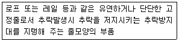
- 안전블록
- 수직구명줄
- 죔줄
- 보조죔줄
(정답률: 59%)
117. 크레인의 운전실 또는 운전대를 통하는 통로의 끝과 건설물 등의 벽체의 간격은 최대 얼마 이하로 하여야 하는가?
- 0.2m
- 0.3m
- 0.4m
- 0.5m
(정답률: 60%)
118. 달비계의 최대 적재하중을 정하는 경우 그 안전계수 기준으로 옳지 않은 것은?
- 달기와이어로프 및 달기강선의 안전계수 : 10 이상
- 달기체인 및 달기 훅의 안전계수 : 5 이상
- 달기강대와 달비계의 하부 및 상부지점의 안전계수 : 강재의 경우 3 이상
- 달기강대와 달비계의 하부 및 상부지점의 안전계수 : 목재의 경우 5 이상
(정답률: 63%)
119. 달비계에 사용이 불가한 와이어로프의 기준으로 옳지 않은 것은?
- 이음매가 있는 것
- 와이어로프의 한 꼬임에서 끊어진 소선의 수가 7% 이상인 것
- 지름의 감소가 공칭지름의 7%를 초과하는 것
- 심하게 변형되거나 부식된 것
(정답률: 64%)
120. 흙막이 지보공을 설치하였을 때 정기적으로 점검하여 이상 발견 시 즉시 보수하여야 할 사항이 아닌 것은?
- 굴착 깊이의 정도
- 버팀대의 긴압의 정도
- 부재의 접속부ㆍ부착부 및 교차부의 상태
- 부재의 손상ㆍ변형ㆍ부식ㆍ변위 및 탈락의 유무와 상태
(정답률: 71%)